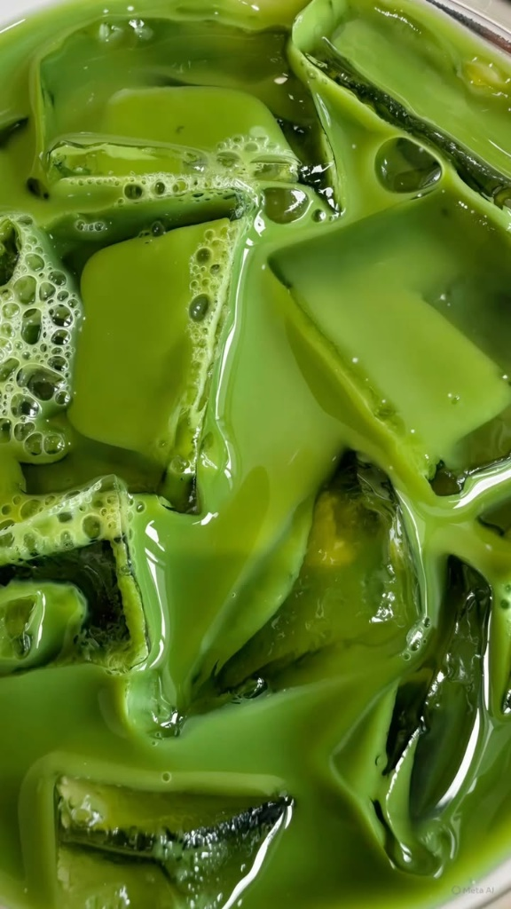

Pack Matcha Iced Latte Ready-to-Pour
Refrescante, cremoso y sin grumos.Pensado especialmente para el clima cálido y dinámico de Caracas, el Pack Matcha Iced Latte Ready-to-Pour reúne dos botellas de nuestro concentrado MatchaBar Cold Brew de 350 ml (700 ml en total) junto a nuestra guía digital de maridajes barista con bebidas de avena, almendra, coco o leche entera.
Disfruta el efecto visual bicolor de cafetería de especialidad desde tu casa u oficina en menos de 15 segundos, manteniendo una textura suave, vibrante y sin residuos sólidos en el fondo del vaso.
Modo de Preparación en 4 Pasos
No necesitas batidores eléctricos ni agua hirviendo. Aprovecha la ventana medidora de cada botella para lograr siempre el balance exacto entre intensidad herbal y cremosidad.
- Paso 1 — Agita suavemente: Antes de abrir la tapa hermética, agita la botella durante 5 segundos para activar las partículas finas de té matcha orgánico.
- Paso 2 — Prepara la base fría: Llena un vaso alto con cubos de hielo y añade 180 ml de tu bebida vegetal favorita (avena o almendra sin azúcar) o agua fría con gas.
- Paso 3 — Dosifica 50 ml exactos: Vierte una porción de MatchaBar Cold Brew Concentrate guiándote por las marcas de la ventana lateral transparente.
- Paso 4 — Personaliza y disfruta: Si deseas un toque dulce natural, agrega unas gotas de miel, extracto de vainilla o jarabe de agave; revuelve y saborea al instante.

Tabla de Rendimiento del Pack (700 ml Totales)
Calcula cuántas bebidas puedes preparar con tu Pack Matcha Iced Latte según el estilo de preparación y la intensidad deseada.
| Estilo de Bebida | Dosis de Concentrado | Base Líquida Sugerida | Rendimiento del Pack | Costo Aprox. por Vaso |
|---|---|---|---|---|
| Iced Matcha Latte Clásico | 50 ml | 180 ml leche de avena o almendra + hielo | 14 bebidas | $1.86 USD |
| Matcha Tonic Cítrico | 40 ml | 200 ml agua tónica + rodaja de limón | 17 bebidas | $1.53 USD |
| Double Shot Pre-Entreno | 70 ml | 150 ml agua fría o agua de coco | 10 bebidas | $2.60 USD |
| Matcha Smoothie Verde | 50 ml | 150 ml leche vegetal + cambur congelado | 14 bebidas | $1.86 USD |